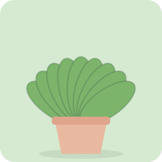
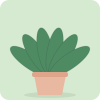
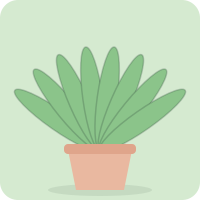
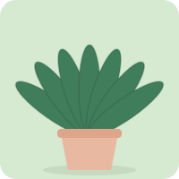

Dracaena trifasciata
Snake plant
Tolerates low light and missed waterings.
Indoors
Good choices for beginners and busy people.
Dracaena trifasciata
Tolerates low light and missed waterings.

Epipremnum aureum
Trailing vines that grow in almost any room.

Spathiphyllum
White flowers. It droops when thirsty, then recovers.

Aloe vera
Bright light and very little water. Gel soothes minor skin burns.

Zamioculcas zamiifolia
Glossy and tough. Store water in its roots.